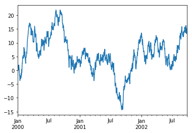

Pandas绘图
matplotlib是底层绘图库，绘制图表时需要组装一些基本组件：
- 数据展示（即图表类型：线型图、柱状图、盒形图、散布图、等值线图等）
- 图例
- 标题
- 刻度标签
- 注解信息
等其他组件
Pandas的绘图方法封装了Matplotlib的pyplot方法，可以提供不需要大量自定义的绘图功能，简化图形绘制
特点：绘制简单方便，但可定制性不如Matplotlib
plot参数表
.plot()是一种将所有列及其标签进行绘制的简便方法
- pandas大部分绘图方法都有一个可选的ax参数，它可以是一个matplotlib的subplot对象，这使你能够在网格布局中更为灵活地处理subplot的位置
- 所有.plot()参数功能和配置，都可以通过Pandas绘图和原生Matplotlib结合书写方式实现
| 参数 | 功能 |
|---|---|
| label | 用于图例的标签 |
| ax | 要在其上绘制的subplot对象，没有则使用当前subplot |
| style | 将要传给matplotlib的风格字符串，如 'ko--' |
| alpha | 图表的填充不透明度，0-1 |
| kind | 可以是 line,bar,barh,kde |
| logy | 在y轴使用对数标尺 |
| use_index | 对象索引用作刻度标签 |
| rot | 旋转刻度标签 0-360 |
| xticks | x轴刻度的值 |
| yticks | y轴刻度的值 |
| xlim | x轴的界限 |
| ylim | y轴的界限 |
| grid | 显示网格线，默认打开 |
| subplots | 将各个dataframe列绘制到单独的subplot中 |
| sharex | 如果subplots=True,则共用同一个x轴，包括刻度和界限 |
| sharey | 如果subplots=True,则共用同一个y轴，包括刻度和界限 |
| figsize | 图像大小元组 |
| title | 图像标题字符串 |
| legend | 添加一个subplot图例，默认True |
| sort_columns | 以字母表顺序绘制各列，默认使用当前顺序 |
Jupyter notebook中如不显示Pandas绘制图像，解决方法:
方式1:载入
import Matplotlib.pyplot as plt，Pandas绘图代码最后加plt.show()方式2：或者直接载入IPython魔术命令
%matplotlib inline
# 方式1
import numpy as np
import pandas as pd
import matplotlib.pyplot as plt
ts = pd.Series(np.random.randn(1000), index = pd.date_range('1/1/2000', periods = 1000))
ts = ts.cumsum()
ts.plot()
plt.show()
# 方式2
import numpy as np
import pandas as pd
import matplotlib.pyplot as plt # 可以不加，但一般需要它和Pandas结合绘图，建议加上
%matplotlib inline
ts = pd.Series(np.random.randn(1000), index = pd.date_range('1/1/2000', periods = 1000))
ts = ts.cumsum()
ts.plot()

- Series对象的索引会被传给matplotlib，用以绘制X轴
- 可以通过use_index=False禁用该功能。
- X轴的刻度和界限可以通过xticks和xlim选项进行调节，Y轴就用yticks和ylim
在DataFrame中，plot()可以绘制所有带有标签的列
- plot属性包含一批不同绘图类型的方法。例如，df.plot()等价于df.plot.line()
- plot的其他关键字参数会被传给相应的matplotlib绘图函数，所以要更深入地自定义图表，就必须学习更多有关matplotlib API的知识
df = pd.DataFrame(
np.random.randn(10, 4).cumsum(0),
columns=['A', 'B', 'C', 'D'],
index=np.arange(0, 100, 10)
)
df
df.plot()

常见绘图参数
df.plot(kind = 'line', figsize = (15, 10), grid = True, legend = True)
plt.show()
kind参数可以绘制的图形：
| 参数 | 解释 |
|---|---|
| ‘line’ | line plot (default) |
| ‘bar’ | vertical bar plot |
| ‘barh’ | horizontal bar plot |
| ‘hist’ | histogram |
| ‘box’ | boxplot |
| ‘kde’ | Kernel Density Estimation plot |
| ‘density’ | same as ‘kde’ |
| ‘area’ | area plot |
| ‘pie’ | pie plot |
| ‘scatter’ | scatter plot |
| ‘hexbin’ | hexbin plot |
柱状图
一些常见图表有专有绘图函数，如柱状图
plot.bar()和plot.barh()分别绘制水平和垂直的柱状图
Series和DataFrame的索引将会被用作X（bar）或Y（barh）刻度
fig, axes = plt.subplots(2, 1)
data = pd.Series(np.random.rand(16), index=list('abcdefghijklmnop'))
data.plot.bar(ax=axes[0], color='k', alpha=0.7)
data.plot.barh(ax=axes[1], color='k', alpha=0.7)
- DataFrame，柱状图会将每一行的值分为一组，并排显示
- DataFrame各列的名称"Genus"被用作了图例的标题
df = pd.DataFrame(
np.random.rand(6, 4),
index=['one', 'two', 'three', 'four', 'five', 'six'],
columns=pd.Index(['A', 'B', 'C', 'D'], name='Genus')
)
df
df.plot.bar()
# stacked=True即可为DataFrame生成堆积柱状图，每行的就会堆积在一起
df.plot.barh(stacked=True, alpha=0.5)
利用value_counts图形化显示Series中各值的出现频率
s = pd.Series([1,1,2,3,4,4,4,4,5,6,6])
s
s.value_counts()
s.value_counts().plot.bar()